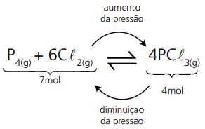
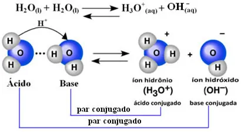

Playlist de Química


Parte por milhão(ppm)
PPM é a abreviação de Partes Por Milhão e é uma unidade de medida de concentração usada para expressar quantidades extremamente pequenas de uma substância (o soluto) em uma solução ou mistura (a solução total). Ela é usada principalmente quando as soluções são muito diluídas (ou seja, quando há muito solvente e muito pouco soluto), como em análises de água, qualidade do ar e vestígios de contaminantes.

Diluição das soluções
A diluição de soluções é um processo físico que consiste em adicionar mais solvente a uma solução já existente. O objetivo é diminuir a concentração do soluto nessa solução. É um processo muito comum no dia a dia, como ao adicionar água em um suco concentrado para deixá-lo mais fraco.

Misturas
A forma mais importante de classificar uma mistura é pelo número de fases que ela apresenta. Uma fase é qualquer porção da mistura que apresenta aspecto visual uniforme e, consequentemente, as mesmas propriedades em toda a sua extensão.

Equilíbrio Químico
O Equilíbrio Químico é um estado dinâmico que ocorre em reações reversíveis (aquelas que ocorrem nos dois sentidos) em um sistema fechado. Nesse ponto, as concentrações de reagentes e produtos se mantêm constantes ao longo do tempo.
.webp)
O Princípio de Le Chatelier é um conceito fundamental do Equilíbrio Químico que explica como um sistema reversível (que ocorre nos dois sentidos) reage a uma perturbação externa. Ele é resumido da seguinte forma: "Quando um sistema em equilíbrio sofre uma perturbação (como mudança de concentração, pressão ou temperatura), ele se desloca no sentido que minimiza ou anula o efeito dessa perturbação, restabelecendo um novo estado de equilíbrio." O "deslocamento" significa que a velocidade de uma das reações (direta ou inversa) se torna momentaneamente maior até que as concentrações se ajustem e um novo equilíbrio seja alcançado.

Os fatores que deslocam o equilíbrio químico são as perturbações externas que, quando aplicadas a um sistema em equilíbrio, forçam o sistema a reagir no sentido de minimizar ou anular essa perturbação, conforme estabelecido pelo Princípio de Le Chatelier.
O Produto Iônico da Água ($K_w$) é a base fundamental que conecta as escalas de pH e pOH, determinando a neutralidade e o limite dessas escalas em soluções aquosas.O Produto Iônico da Água ($K_w$) é a base fundamental que conecta as escalas de pH e pOH, determinando a neutralidade e o limite dessas escalas em soluções aquosas. A água pura, que é uma substância anfótera (pode atuar como ácido e como base), sofre um processo chamado autoionização ou autoprotólise. Duas moléculas de água reagem entre si de forma reversível.
 <10>Concentração Comum e MolarA Concentração Comum e a Concentração Molar (ou Molaridade) são duas das formas mais importantes de expressar a quantidade de soluto presente em uma solução. Elas se diferenciam nas unidades utilizadas para medir o soluto.A Concentração Comum é a relação entre a massa do soluto e o volume da solução. Ela indica quantos gramas de soluto estão dissolvidos em um litro de solução.
.webp) <11>Classificação das soluções
<11>Classificação das soluções
As soluções podem ser classificadas de diversas maneiras, dependendo do critério que você usar: a proporção de soluto (grau de saturação), o estado físico dos componentes ou a natureza do soluto (capacidade de conduzir eletricidade).